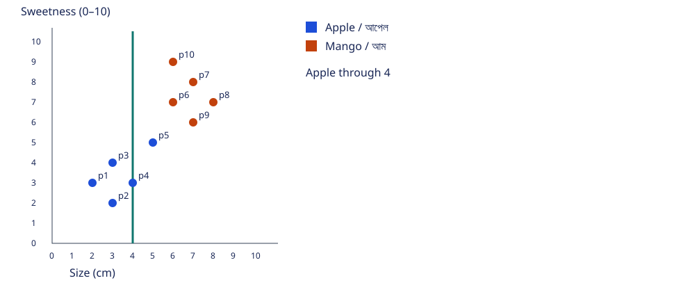
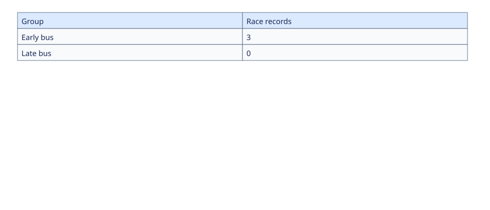

মিনা নানার জন্য শেষ খাম গুছাল। তাতে ফলের বিন্দু, নিয়মের কার্ড আর উত্তর ঢাকা খেলা। নানা কম্পিউটারের বদলে পেন্সিল আনলেন। আজ আন্দাজের কারণও বলতে হবে। টুকটুক সেই কারণ নিয়ে প্রশ্ন করবে।
প্রায় পঁয়তাল্লিশ মিনিট রাখো। কাগজ, পেন্সিল আর দুই রং নাও। আগে নিজে করো। পরে বন্ধুর সঙ্গে কারণ মেলাও। ব্যাখ্যা খোলার আগে নিজের উত্তর লেখো।
শেখা, অ্যাপ, ফিচার, লেবেল, নিয়ম, শেখার ধরন, লুকানো পরীক্ষা আর দায়িত্ব ঝালিয়ে নেবে। ছবির তথ্য বানানো। প্রোগ্রামিং বা সূত্র লাগবে না। Coding অংশটি পরের পড়ার জন্য কাগজের পরিকল্পনা।
দুই অক্ষের নাম লেখো। বিন্দুর রং কোন তথ্য দেয়? p6 নামটিকে ফলের মাপ ভেবো না।

গোনার আগে ভুল বিন্দুতে গোল দাও। নিয়ম মিষ্টতা দেখে না। তাই উচ্চতা বদলে ভুল পাশের ফল ঠিক হবে না।

একটি দল করার ধরন আর উদ্দেশ্য বলো। বিন্দুর দল হলেই তার পরিচিত প্রাণী বা ফলের নাম আছে ধরে নিও না।

ট্রেনিং ছয়টি, টেস্ট চারটি। নমনীয় নিয়মের ফল বলার সময় দুই ডেটাসেটই বলো। শূন্য ট্রেনিং বার নিশ্চয়তা নয়।

কী তথ্য নেই লেখো। ন্যায্যভাবে সুযোগ দেওয়ার উপায় বলো। নিজের ইচ্ছায় দৌড়ের সময় বানিও না।
Exam প্রশ্নে এগুলোর ধাপে ধাপে উত্তর আছে। শুধু রং দেখে আন্দাজ না করে প্রতিটি ভুল কার্ড চিহ্নিত করো।
কাগজের নির্দেশ পড়ো: “আকার পাঁচ বা কম হলে আপেল বলো। নইলে আম।” চার, পাঁচ, ছয় আকারে ক্রমে কী নাম বলবে? মাঝের ক্ষেত্রে “বা কম” কথাটা ব্যবহার করে বোঝাও।
এই মডিউলে প্রোগ্রাম চালানোর দরকার নেই। নিয়ম মন দিয়ে পড়ছ। পরে কম্পিউটারের বোঝার ভাষায় একই সিদ্ধান্ত লিখবে।
তিন ধাপে ফলের নিয়মের পরিকল্পনা লেখো: আকার নাও, ভাগের মানের সঙ্গে মেলাও, নাম বলো। চতুর্থ ধাপে আসল লেবেল পাওয়ার পরে অনুমান মিলিয়ে দেখো। শেখা আর যাচাই পরিকল্পনাতেও আলাদা রেখো।
প্রোগ্রামিং না জানলে কাগজেই চালিয়ে যাও। লিখিত অনুশীলনে যুক্তি চাই, কম্পিউটারের syntax নয়। Python টুলস পড়ার পরে পরিকল্পনায় ফিরতে পারবে।
প্রথম পাঁচ ছবির মূল উত্তর: আকার ছয়, মিষ্টতা সাত, নাম আম; একটি ভুল; unsupervised দল; নমনীয় নিয়ম; আর না, রেকর্ড না থাকা ধীর হওয়ার প্রমাণ নয়। শুধু শব্দ মিললে নয়, প্রমাণ বোঝাতে পারলেও নম্বর দাও।
তিনের বেড়ায় দুই ভুল, পাঁচে শূন্য। ছয় আকারের p6 ও p10-এর মিষ্টতা সাত আর নয়; দুটিই আম। Simple নিয়ম চার লুকানো কার্ডে শূন্য ভুল করে। আট থেকে তিন সরালে পাঁচটি ট্রেনিং কার্ড থাকে। নির্দেশ পড়ার নাম: আপেল, আপেল, আম।
সারি বা অক্ষ ভুল হলে ফিচার আর লেবেল দেখো। গোনা না মিললে নিয়ম শেখার ল্যাব করো। ব্যবস্থা গুলিয়ে গেলে তিন পথ পড়ো।
লুকানো উত্তর দেখে নিয়ম বাছলে সিল করা পরীক্ষার ভাবনা আবার দেখো। অন্যায় বাছাই বা ছবির অনুমতিতে দায়িত্বের পাঠ দেখো। আলোচনার উত্তর আলাদা হতে পারে, যদি কারণ দিয়ে প্রভাব পড়া মানুষকে রক্ষা করো।
কারণ বলতে পারলে যাও Python টুলবক্স সাজাতে।